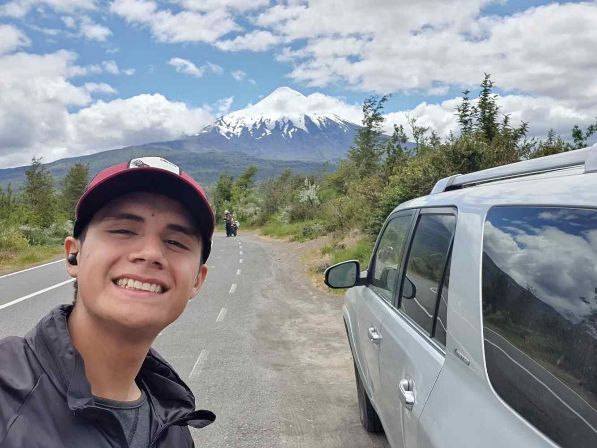

Josue Neiculeo Baeriswyl | WDD 130
Josué Neiculeo, a dedicated student from Santiago, Chile, is embarking on a journey to become a skilled software developer. With a passion for learning and a keen interest in technology, Josué is thriving in the BYU Idaho online program, leveraging the valuable resources of the BYU Pathway platform. His dedication to his studies is fueled by a desire to make a positive impact in the world through his software development skills.
When he's not immersed in the world of coding and software development, Josué finds solace and adventure in the great outdoors, exploring the beauty of hiking and immersing himself in books. His enthusiasm for software, programming, and building projects is evident in his dedication to mastering the intricacies of his chosen field.
Beyond his academic pursuits, Josué is a curious and inquisitive individual who enjoys exploring new technologies and staying up-to-date with the latest trends in the software development industry. His ability to combine his passion for learning with his technical skills makes him a promising future software developer.